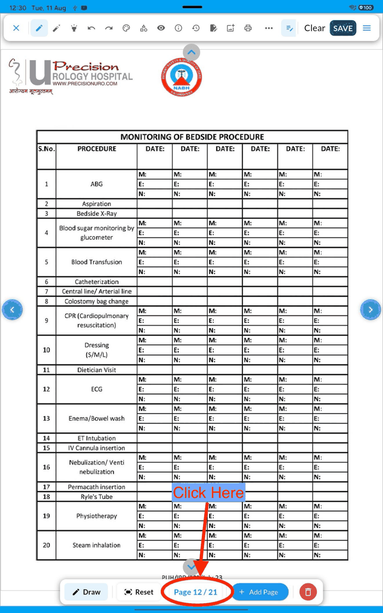
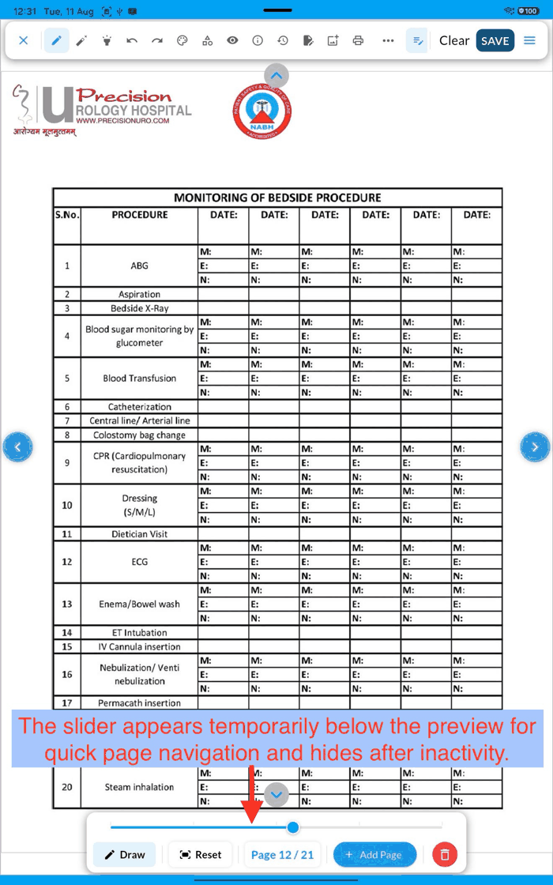
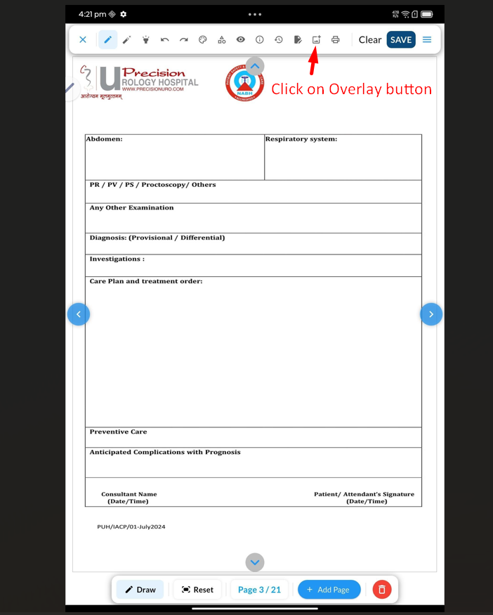
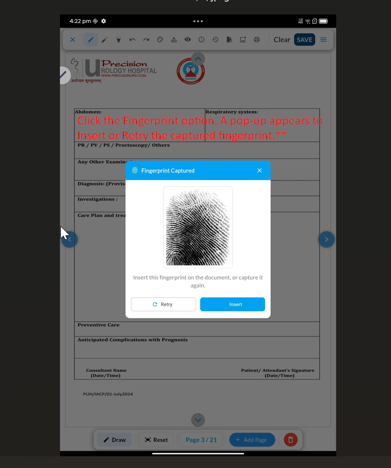
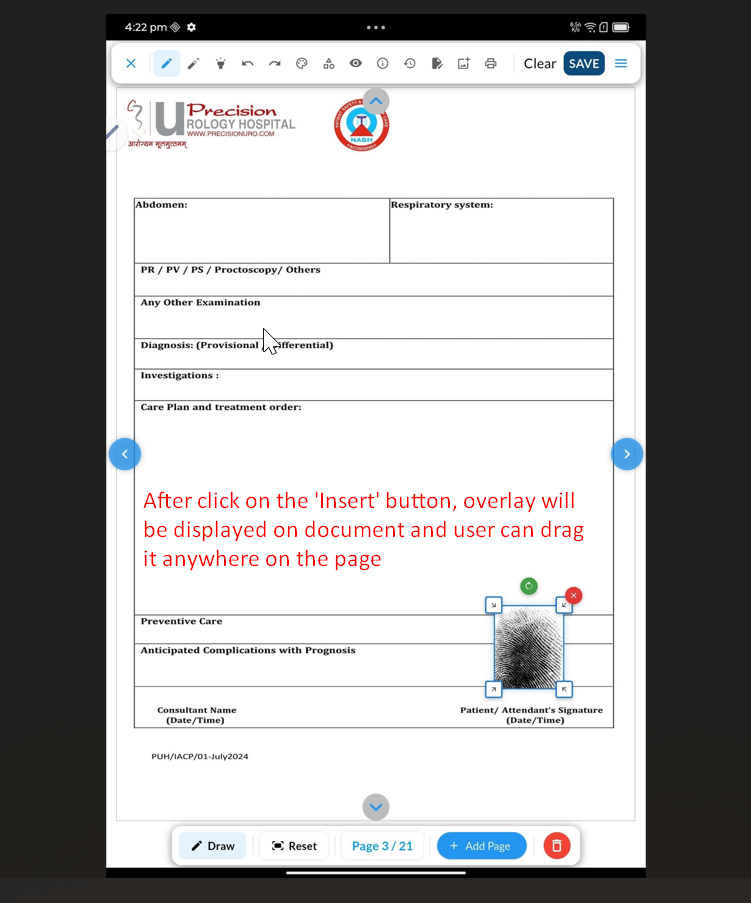
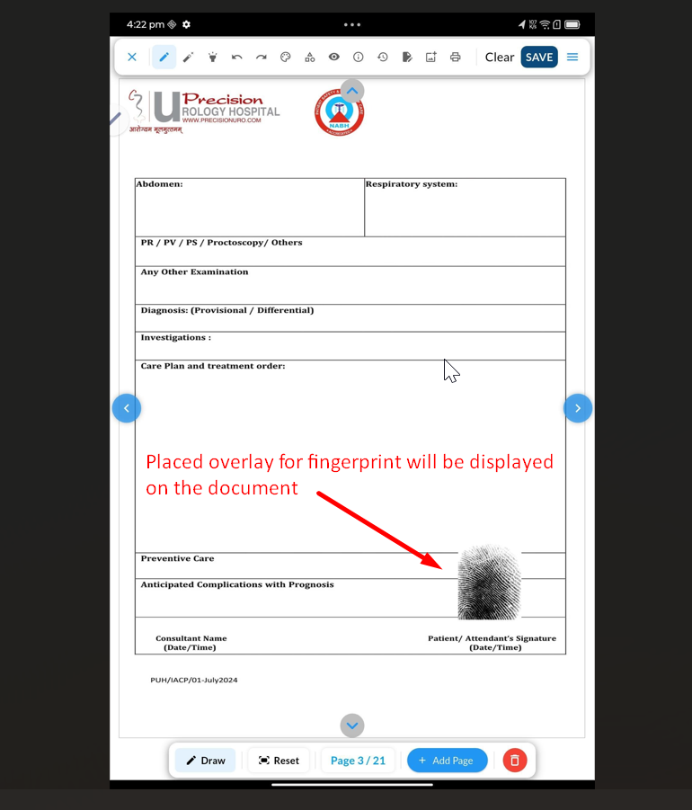
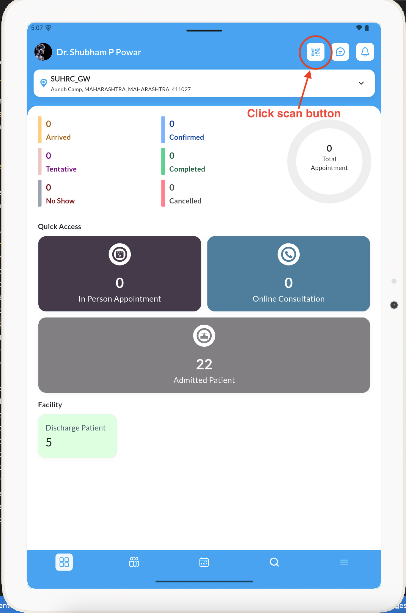
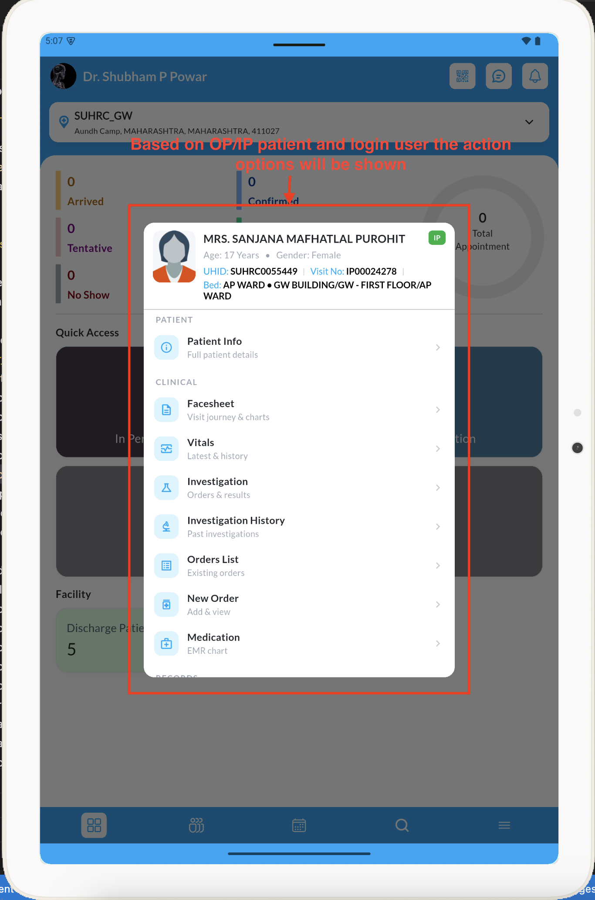

Each entry is a full walkthrough of one new feature — what it replaces, what you need, every
screen you will see, and what to do when it misbehaves. Written to be read in a training session, not skimmed.
Covers: Doctor app, Nurse app, Paperless DocumentationLatest entry: August 2026
August 2026 · Doctor app, Nurse app, Paperless Documentation
Document actions now follow the user’s role permissions
What a signed-in user may do with patient documents — create, edit, delete, view, print, e-mail, send on
WhatsApp — is now decided by the permissions set for their role in Rescribe, not by the app. An action the
role does not carry appears greyed out on screen and does not respond to a tap.
Who this is for: every hospital that keeps different rights for consultants, junior doctors, nurses and
ward staff. Until now the app showed all seven document actions to everyone who could reach the screen.
The seven permissions
All of them sit under the Patient Document module in role configuration. They are read from the server
after sign-in — nothing is configured inside the app.
Permission
Without it, the user cannot…
Where it shows
Patient Document − Add
Start a new document, add a page, or add an overlay to a page
Documents list, history, canvas toolbar
Patient Document − Edit
Write on, correct or re-save an existing document
Canvas — pen, eraser, shapes, copy tools, Save
Patient Document − Delete
Delete a document, or delete a page from one
History, preview, canvas
Patient Document − View
Open a document to read it
Documents list, history, preview
Patient Document − Print
Print, or save the document as a PDF
Documents list, preview, unified preview
Patient Document − Send Email
E-mail the document out
Documents list, share sheet
Patient Document − Send WhatsApp
Send the document on WhatsApp
Documents list, share sheet
Swipe the table sideways to read every column →
Greyed out, not hidden
A blocked action stays on screen at reduced opacity and ignores taps. That is deliberate: staff can see the
button exists and that their role does not carry it, instead of hunting for a control that vanished and reporting
it as a bug. If a user says “the Print button is faded”, the answer is a role change in Rescribe, not
an app fix.
When the permissions are read
At app startThe list saved from the last session is loaded before the first screen is
drawn, so the correct buttons are live immediately — including on a tablet that opens with no
network.
On the dashboardThe app asks the server for the current list and replaces the saved
one. A role changed in Rescribe takes effect on the next dashboard load — no reinstall, no
update.
When the network is downThe refresh fails quietly and the last known list stays in
force. Permissions are never widened because a request failed.
On sign-outThe list is dropped with the rest of the session. The next user starts from
their own permissions, never the previous user’s.
Blocked until the answer arrives. If nothing is known yet — a brand-new install signed in for the
first time with no network — every gated action stays disabled. The safe failure is “cannot do it
yet”, never “can do everything”. Get the tablet online once and it settles.
Clear Cache is safe. Clearing the cache from the menu re-reads the permissions from the server. If the
server cannot be reached at that moment the previous list is put back, so the user is not left with a screen of
dead buttons.
When it does not look right
What you see
What it means
What to do
Every document action is faded
No permission list has reached this tablet yet
Connect to the network and open the dashboard once
One action is faded, the rest work
The role does not carry that permission
Change the role in Rescribe, then reopen the dashboard on the tablet
A permission was granted but the button is still faded
The tablet is still on the previously read list
Return to the dashboard, or sign out and back in
August 2026 · Paperless Documentation
A page slider for long documents
A twenty-one page nursing chart used to be twenty swipes away from its last page. The Page n / n chip on
the bottom toolbar is now a button: tap it and a slider appears, drag the slider and the document jumps straight
to the page you let go on.
Who this is for: anyone working in long ward files — bedside monitoring charts, intake-output
records, multi-day nursing notes. It is on both the writing canvas and the document preview, and it behaves the
same way in each.
The flow, screen by screen
Tap the “Page n / n” chipBottom toolbar, between Reset and Add Page. It was only a page counter before; it is now the
switch that opens the slider.

Tap the page chip on the bottom toolbar.
The slider opens above the toolbarA track with tick marks appears just under the page — every page is ticked in a short document,
every fifth page in a long one, so start, middle and end are easy to read.

The slider sits below the preview and hides itself again after a few seconds.
Drag to the page you wantA small Page N bubble follows the thumb so you can see where you are before committing. The
document itself does not move while you drag.
Let goThe document jumps once, to the page under your finger. Releasing is what turns the page — dragging
across fifteen pages does not render fifteen pages, which is why the jump is instant instead of a fifteen-page
flick.
It puts itself awayThe slider hides about three seconds after the last touch, giving the page back the screen. Tap the chip
again to bring it back. The countdown pauses while a finger is down, so it cannot vanish mid-drag.
Worth knowing
Three pages or more. On a one or two page document the chip stays a plain counter — a slider
would be slower than a swipe.
The old ways still work. Swiping the page and the left / right arrows are unchanged; the slider is for
distance, not for the next page.
Deleting or adding a page mid-drag is safe. The track reshapes to the new page count and the jump is
clamped to a page that exists.
Keyboard. With a keyboard attached, the left and right arrow keys step the slider one page at a time.
A patient’s or attendant’s thumb impression can now be taken with a USB fingerprint scanner and
placed straight onto the document being written on. It behaves like every other overlay — drag it, resize
it, undo it — so it drops into the signature block of a consent form the same way a doctor stamp drops onto
a prescription.
Who this is for: any ward or OPD that still collects an inked thumb impression on consent forms,
admission papers, high-risk consents or discharge summaries. Those are the forms that currently force a paper
detour in an otherwise paperless flow.
What it replaces
Step
Before
Now
Take the impression
Ink pad, thumb, paper form
Finger on the scanner, on the tablet already in hand
Attach to the record
Scan or photograph the signed page, upload it separately
Impression lands on the page being written, in one action
Correct a bad impression
Re-print the form, take it again
Retry in the preview, or undo the overlay
Storage
Physical file plus a scanned copy
Part of the saved document, nothing loose
Before you start — the hardware
Scanner: Mantra MFS500 is the recommended, tested device. Secugen Hamster Pro and Hamster Plus are also
supported.
Cable: the scanner is USB. On a tablet it connects through a USB OTG adapter — the same kind used
for a USB pen drive.
Connect it first. Plug the scanner in before tapping Fingerprint. With nothing connected the app says
“No fingerprint scanner connected.”
Permission, once: the first capture after the tablet is switched on shows an Android dialog asking to
allow the app to use the scanner. Tap allow. If the scanner is plugged in after the app is already open,
the first tap may report “USB permission denied. Tap again to retry.” — allow the
dialog, tap Fingerprint again, and it works.
Sharing one scanner: nothing is bound to a device or a user. One scanner can be carried between tablets
on the round.
The flow, screen by screen
Open the document in the canvas first — this lives inside the drawing screen, not the document list.
Everything below happens on the page you are already writing on.
Tap the overlay button on the canvas toolbarTop toolbar, between the document icon and the print icon — the small picture-in-a-frame icon. This
is the same button used for photos, barcodes and doctor stamps.

The overlay button on the canvas toolbar.
Pick Fingerprint in the “Choose one” sheetThe sheet slides up from the bottom. Fingerprint is the last option in the top row, after Patient Image.
The doctor-stamp list below it is unchanged.
Place the finger on the scannerThe screen dims and shows “Place finger on scanner…” while the device wakes up.
Press the pad of the finger flat and centred on the glass and hold it still until the message clears. Do not
roll the finger.
Check the impression, then InsertThe captured print is shown for approval. Insert accepts it, Retry takes it again without
leaving the dialog, and × closes without placing anything. Look at the ridges: they should be
clearly separated, not a black smudge.

Approval step — Insert to accept, Retry to capture again.
Drag it into the signature boxAfter Insert the impression appears on the page with selection handles: drag from the middle to move it,
pull a corner to resize, the red × removes it, the green tick commits it. Normally it goes into
the Patient / Attendant’s Signature box.

Freshly inserted — movable and resizable until committed.
Save the documentTap SAVE. The impression is part of the page from then on, exactly like a stamp or a photo, and it
appears on the printed and shared copies.

Committed into the signature block, ready to save.
What is stored — and what is not
It is a picture, nothing more. The impression is placed on the document as an image, the same as a photo
or a stamp. It is saved with the document and nowhere else.
No identity check happens. Nothing is sent to Aadhaar or any biometric service, nothing is matched
against a database, and no fingerprint template is created or kept. The app cannot tell you whose finger it was
— it records the impression on the form, which is what the consent form needed in the first place.
It follows the document. Because it is part of the page, it is covered by the same offline sync, the
same history and the same sharing rules as everything else drawn on that document.
When it does not work
What you see
What it means
What to do
“No fingerprint scanner connected.”
Nothing usable on the USB port
Check the OTG adapter and the cable at both ends; try the scanner on another tablet to rule the device
out
“USB permission denied. Tap again to retry.”
The scanner was plugged in after the app opened, so Android has not been asked yet
Allow the permission dialog, then tap Fingerprint again
Print looks partial
Normal — the sensor images the pad of the fingertip, not the whole finger
Nothing. A partial pad impression is what these scanners produce
Ridges smudged or solid black
Too much pressure, damp finger, or a dirty sensor
Wipe the glass, dry the finger, press flat but lightly, then Retry
Very faint impression
Too little contact, or dry skin
Press the finger fully flat and hold still; Retry
Placed in the wrong spot
Overlay was committed before positioning
Undo on the canvas toolbar, then place it again
Worth saying in training
Take the impression at the same moment as the stamp, not as a separate trip — it is one more tap
in the identify-and-stamp step of the bedside flow.
Keep it inside the signature box. An impression drawn across a barcode or QR code can stop that code
scanning.
Retry costs nothing. Staff hesitate to re-take because the paper version wasted a form; here it does
not.
The scanner needs no setup screen, no pairing and no login. Plug in, allow once, use.
Scan a patient’s QR or barcode to jump straight to their actions
The home screen of both the doctor and the nurse app now carries a QR / barcode button. Scan the code on a
patient’s wristband, file sticker or slip — it reads a UHID or a visit number, the app
works out which — and a Patient Quick Actions sheet opens with everything you would normally reach by
searching for that patient, already in context.
Who this is for: anyone who currently types a UHID into Search to open one patient — a doctor at
the bedside, a nurse on a ward round. It replaces “open Search, choose the tab, type the number, pick the
row” with one scan.
What the scan reads
UHID or visit number — either works. You do not have to know which is printed on the code; the
server resolves the code to the patient’s current active visit.
It needs a connection. The scan resolve is a live lookup, so it is online-only — offline, the QR
button is greyed out and answers with a message rather than opening onto a failing screen.
No active visit? If the code matches a patient who has no open visit, the sheet says so instead of
opening a half-empty action list.
The flow, screen by screen
Tap the QR button on the home app barTop-right of the doctor and the nurse home screen, next to the notification bell.

Tap the QR button on the app bar, next to the message and notification icons.
Point at the codeWristband, file sticker or registration slip — whatever carries the patient’s UHID or visit
barcode.
The Patient Quick Actions sheet opensA header identifies the patient — photo, name, age, gender, UHID, visit / admission number, and the
bed or queue when relevant — so you can confirm it is the right person before doing anything.

The action list is tailored to the patient and the signed-in user — here, an admitted (IP)
patient in the doctor app.
Pick an actionThe list is tailored to who you are and to the patient. A doctor sees the clinical and records actions for
that visit; a nurse sees the ward actions for that bed. Tapping one closes the sheet and opens the existing
screen for it.
What each role sees
Doctor. For an outpatient appointment: Patient Info, Facesheet, Investigation and its history, Documents,
Consultation History, Visit History and Appointment Details. For an admitted patient (IP / ED / DC): the same
plus Vitals, Orders, New Order and the EMR chart.
Nurse. The bed actions for that patient — Facesheet, Medication, Orders List, New Order,
Documents and Visit History — plus, where the patient’s status allows it, the ward-management
actions: Transfer Out, Transfer Bed, Mark / Tentative / Cancel / Approve / Actual Discharge, Send for Billing,
Patient Deceased and Doctor Visit Posting. A patient who is not yet checked in shows only Pending Check
In; one awaiting transfer-in shows only Transfer In.
Support tip: the sheet is a shortcut, not a new place data lives — every action opens the same
screen the user reaches by hand, so anything that works there works here. If the sheet will not open, check the
connection first: the scan lookup is online-only.
Nothing here needs to be learned — the same screens, working better. Listed so support knows what changed
if a user asks why something behaves differently from last month.
Speed and stability
Documents open on the first page while the remaining pages load behind it, instead of waiting for the whole
file.
Page switching in the canvas and the preview is smoother; pages that were opened once come back instantly.
Saving writes several pages at a time and streams the upload to disk, so a long document saves faster and
holds far less memory.
Large documents no longer run the tablet out of memory — image caching now evicts what is off screen.
Templates and print assets are fetched and cached ahead of use, so printing starts sooner.
Background downloads are throttled, so a sync in progress no longer slows the screen in front of the user.
Offline
Appointment history, appointment booking, patient search and check-in status are cached, so those screens open
with real data when the network is out.
If the location cannot be read, the last known location is used instead of leaving the field empty.
Signing out no longer discards the tablet’s device registration, and the sign-out confirmation now warns
when documents are still waiting to sync.
Actions that only work with a connection now grey out consistently and answer with the same clear message
instead of firing a request that can only fail. On the nurse home screen that covers the QR scan, notifications
and the branch switch; on the Bed Display screen it covers every ward action — Pen Mode is the one thing
that stays usable offline, because it reads cached documents and queues its own saves.
Nurse app
The Bed Display screen now supports pull-to-refresh, and reloads itself automatically when the network
comes back after a failed load — without discarding beds already on screen.
The nursing-station picker now opens directly under its own card instead of drifting to the middle of the
screen; the branch picker is unchanged.
The home-screen loading skeleton matches the real dashboard more closely — taller bed-count card and a
softer border, so the screen does not jump when data arrives.
New Order from a bed now opens the order-add screen with the bed already in context, one step shorter.
Screens and controls
Read-only notes no longer zoom on a double tap, and their height is measured correctly, so text is not cut
off.
Date pickers keep the current time when a date is picked, instead of resetting to midnight; dates and times
across the app follow IST consistently.
The today’s-appointment screen no longer flashes “no appointments” while it is still
loading.
Tapping a patient in the list opens a patient info dialog, and patient photos load more reliably.
Stylus handwriting-to-text is turned off inside text fields, so the keyboard behaves the same with a stylus as
with a finger.
Print output uses one image quality throughout, so a printed page looks the same wherever it was printed from.
Fingerprint scanner USB permission handling is more forgiving when the scanner is plugged in after the app is
already open.